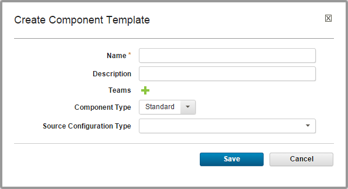

Creating component templates
To create a component template, specify information about the template, such as which plug-in it is related to.
- To create a template:
-
Display the Create Component Template dialog box (Components > Templates > Create Template).

-
Enter the template's name in the Name field.
- Enter a description in the Description field. The description can be used to convey more information about the template.
- In the Teams fields, specify the access information for the template.
- In the Component Type list, select z/OS for System z® components and Standard for all other components.
-
In the Source Configuration Type list, select the source type of the component. Selecting a value other than the default
None, displays more fields that are associated with your selection. Source-dependent fields are used to identify and configure the artifacts. If you select a source, components that are based on the template use the same source.For information about creating components of specific types, see Creating components from the file system, Creating components from build integration tools, or Creating components from source-code management systems.
Note:
If you select a source, any properties you configure are set for any components that are created with the template.
-
Click Save to save the template. Saved templates are listed in the Component Templates pane.
- Add components, processes, and properties to the template.
Parent topic: Component templates